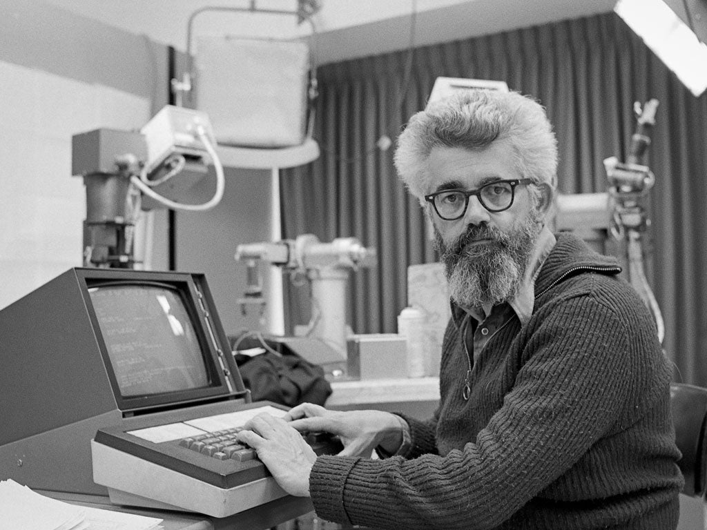

ジョン・マッカーシー
"他人の目に映る自分の行動の価値を自分で選ぶことはできません。ですから、誰が注目しても、正しいことをすれば十分だということを認識しておかなければなりません。"

紹介
ALGOL設計
LISP開発
フレーム問題提唱
タイムシェアリング概念一般化（現在のサーバ、プロバイダ、クラウド）
発言
"私たちは人間の精神活動を魚が泳ぐことを理解する程度しか理解していない"
"...それが機能するようになると、誰もそれを AI と呼ばなくなります。"
"計算を拒む者は、ナンセンスな話をする運命にある。"
"結局のところ、すべての旅行は時間と心の旅です。物理的な風景は私たちの内なる風景を映し出す鏡であり、あるいはそこへの鍵なのかもしれません。"